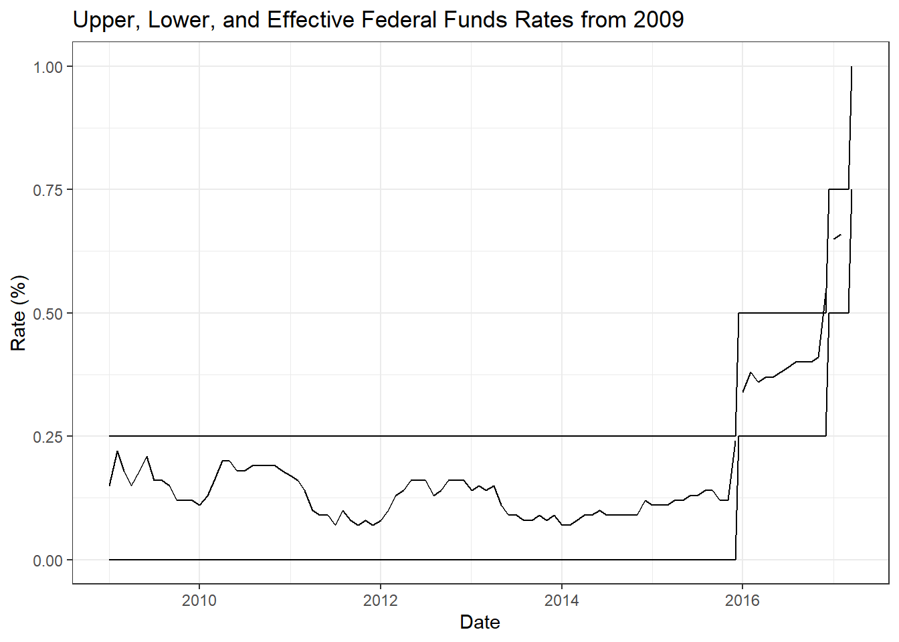

library(tidyverse)
library(summarytools)
library(lubridate)
library(ggplot2)
knitr::opts_chunk$set(echo = TRUE, warning=FALSE, message=FALSE)Challenge 6
challenge_6
fed_rate
Visualizing Time and Relationships
Challenge Overview
Today’s challenge is to:
- read in a data set, and describe the data set using both words and any supporting information (e.g., tables, etc)
- tidy data (as needed, including sanity checks)
- mutate variables as needed (including sanity checks)
- create at least one graph including time (evolution)
- try to make them “publication” ready (optional)
- Explain why you choose the specific graph type
- Create at least one graph depicting part-whole or flow relationships
- try to make them “publication” ready (optional)
- Explain why you choose the specific graph type
R Graph Gallery is a good starting point for thinking about what information is conveyed in standard graph types, and includes example R code.
(be sure to only include the category tags for the data you use!)
Read in data
fed_orig<-read_csv("_data/FedFundsRate.csv",
skip=1,
col_names=c("year","month","day","fedfunds_target","fedfunds_upper","fedfunds_lower","fedfunds_eff","realgdp_change","unemploy_rate","inflation_rate"))
fed_orig# A tibble: 904 × 10
year month day fedfunds_…¹ fedfu…² fedfu…³ fedfu…⁴ realg…⁵ unemp…⁶ infla…⁷
<dbl> <dbl> <dbl> <dbl> <dbl> <dbl> <dbl> <dbl> <dbl> <dbl>
1 1954 7 1 NA NA NA 0.8 4.6 5.8 NA
2 1954 8 1 NA NA NA 1.22 NA 6 NA
3 1954 9 1 NA NA NA 1.06 NA 6.1 NA
4 1954 10 1 NA NA NA 0.85 8 5.7 NA
5 1954 11 1 NA NA NA 0.83 NA 5.3 NA
6 1954 12 1 NA NA NA 1.28 NA 5 NA
7 1955 1 1 NA NA NA 1.39 11.9 4.9 NA
8 1955 2 1 NA NA NA 1.29 NA 4.7 NA
9 1955 3 1 NA NA NA 1.35 NA 4.6 NA
10 1955 4 1 NA NA NA 1.43 6.7 4.7 NA
# … with 894 more rows, and abbreviated variable names ¹fedfunds_target,
# ²fedfunds_upper, ³fedfunds_lower, ⁴fedfunds_eff, ⁵realgdp_change,
# ⁶unemploy_rate, ⁷inflation_rate
# ℹ Use `print(n = ...)` to see more rowsBriefly describe the data
print(dfSummary(fed_orig, varnumbers = FALSE,
plain.ascii = FALSE,
style = "grid",
graph.magnif = 0.70,
valid.col = FALSE),
method = 'render',
table.classes = 'table-condensed')Data Frame Summary
fed_orig
Dimensions: 904 x 10Duplicates: 0
| Variable | Stats / Values | Freqs (% of Valid) | Graph | Missing | ||||
|---|---|---|---|---|---|---|---|---|
| year [numeric] |
|
64 distinct values |  |
0 (0.0%) | ||||
| month [numeric] |
|
12 distinct values |  |
0 (0.0%) | ||||
| day [numeric] |
|
29 distinct values |  |
0 (0.0%) | ||||
| fedfunds_target [numeric] |
|
63 distinct values |  |
442 (48.9%) | ||||
| fedfunds_upper [numeric] |
|
4 distinct values |  |
801 (88.6%) | ||||
| fedfunds_lower [numeric] |
|
4 distinct values | |
801 (88.6%) | ||||
| fedfunds_eff [numeric] |
|
466 distinct values |  |
152 (16.8%) | ||||
| realgdp_change [numeric] |
|
113 distinct values |  |
654 (72.3%) | ||||
| unemploy_rate [numeric] |
|
71 distinct values |  |
152 (16.8%) | ||||
| inflation_rate [numeric] |
|
106 distinct values |  |
194 (21.5%) |
Generated by summarytools 1.0.1 (R version 4.2.1)
2022-08-24
Tidy Data (as needed)
There was just a little bit of tidying needed, to clean up the date.
fed<-fed_orig %>%
mutate(date=make_date(year,month,day)) %>%
select(-c(year,month,day))
fed# A tibble: 904 × 8
fedfunds_target fedfunds…¹ fedfu…² fedfu…³ realg…⁴ unemp…⁵ infla…⁶ date
<dbl> <dbl> <dbl> <dbl> <dbl> <dbl> <dbl> <date>
1 NA NA NA 0.8 4.6 5.8 NA 1954-07-01
2 NA NA NA 1.22 NA 6 NA 1954-08-01
3 NA NA NA 1.06 NA 6.1 NA 1954-09-01
4 NA NA NA 0.85 8 5.7 NA 1954-10-01
5 NA NA NA 0.83 NA 5.3 NA 1954-11-01
6 NA NA NA 1.28 NA 5 NA 1954-12-01
7 NA NA NA 1.39 11.9 4.9 NA 1955-01-01
8 NA NA NA 1.29 NA 4.7 NA 1955-02-01
9 NA NA NA 1.35 NA 4.6 NA 1955-03-01
10 NA NA NA 1.43 6.7 4.7 NA 1955-04-01
# … with 894 more rows, and abbreviated variable names ¹fedfunds_upper,
# ²fedfunds_lower, ³fedfunds_eff, ⁴realgdp_change, ⁵unemploy_rate,
# ⁶inflation_rate
# ℹ Use `print(n = ...)` to see more rowsTime Dependent Visualization
I was curious to analyze some of these macroeconomic indicators around the 2008 economic crisis, so I created another new data set that narrows the date range down to the five years before and after 2008.
fed_crisis<-fed %>%
filter(date>=ymd("2003-01-01")) %>%
filter(date<ymd("2013-01-01"))
fed_crisis# A tibble: 147 × 8
fedfunds_target fedfunds…¹ fedfu…² fedfu…³ realg…⁴ unemp…⁵ infla…⁶ date
<dbl> <dbl> <dbl> <dbl> <dbl> <dbl> <dbl> <date>
1 1.25 NA NA 1.24 2.1 5.8 1.9 2003-01-01
2 1.25 NA NA 1.26 NA 5.9 1.7 2003-02-01
3 1.25 NA NA 1.25 NA 5.9 1.7 2003-03-01
4 1.25 NA NA 1.26 3.8 6 1.5 2003-04-01
5 1.25 NA NA 1.26 NA 6.1 1.6 2003-05-01
6 1.25 NA NA 1.22 NA 6.3 1.5 2003-06-01
7 1 NA NA NA NA NA NA 2003-06-25
8 1 NA NA 1.01 6.9 6.2 1.5 2003-07-01
9 1 NA NA 1.03 NA 6.1 1.3 2003-08-01
10 1 NA NA 1.01 NA 6.1 1.2 2003-09-01
# … with 137 more rows, and abbreviated variable names ¹fedfunds_upper,
# ²fedfunds_lower, ³fedfunds_eff, ⁴realgdp_change, ⁵unemploy_rate,
# ⁶inflation_rate
# ℹ Use `print(n = ...)` to see more rowsI wanted to plot Inflation, Unemployment, and Effective Federal Funds Rate on top of each other for this time period (2003-2013). I was able to plot these, but I was not able to successfully create a legend that clearly identifies which one is which.
fed_crisis %>%
ggplot(aes(x=date)) +
geom_line(aes(y=unemploy_rate,color="maroon")) +
geom_line(aes(y=inflation_rate,color="blue")) +
geom_line(aes(y=fedfunds_eff,color="dark green")) +
expand_limits(y=0) +
theme_bw() +
labs(title="Unemployment, Inflation, and the Federal Funds Rate Around 2008",
x="Date",
y="Rate (%)")
Visualizing Part-Whole Relationships
After the 2008 crisis, the Fed adjusted the way they dealt with the Federal Funds Rate, setting upper and lower targets for the effective rate. I wanted to plot these upper, lower, and effective rates from 2009 onwards. Once again, I was not sure how to create a legend for this graph; however, the upper-lower-effective nature of the data does make it somewhat intuitive to interpret, at least for someone familiar with the ideas of the data.
fed_post <- fed %>%
filter(date>=ymd("2009-01-01"))
fed_post# A tibble: 102 × 8
fedfunds_target fedfunds…¹ fedfu…² fedfu…³ realg…⁴ unemp…⁵ infla…⁶ date
<dbl> <dbl> <dbl> <dbl> <dbl> <dbl> <dbl> <date>
1 NA 0.25 0 0.15 -5.4 7.8 1.7 2009-01-01
2 NA 0.25 0 0.22 NA 8.3 1.8 2009-02-01
3 NA 0.25 0 0.18 NA 8.7 1.8 2009-03-01
4 NA 0.25 0 0.15 -0.5 9 1.9 2009-04-01
5 NA 0.25 0 0.18 NA 9.4 1.8 2009-05-01
6 NA 0.25 0 0.21 NA 9.5 1.7 2009-06-01
7 NA 0.25 0 0.16 1.3 9.5 1.5 2009-07-01
8 NA 0.25 0 0.16 NA 9.6 1.4 2009-08-01
9 NA 0.25 0 0.15 NA 9.8 1.5 2009-09-01
10 NA 0.25 0 0.12 3.9 10 1.7 2009-10-01
# … with 92 more rows, and abbreviated variable names ¹fedfunds_upper,
# ²fedfunds_lower, ³fedfunds_eff, ⁴realgdp_change, ⁵unemploy_rate,
# ⁶inflation_rate
# ℹ Use `print(n = ...)` to see more rowsfed_post %>%
ggplot(aes(x=date)) +
geom_line(aes(y=fedfunds_upper)) +
geom_line(aes(y=fedfunds_lower)) +
geom_line(aes(y=fedfunds_eff)) +
expand_limits(y=0) +
theme_bw() +
labs(title="Upper, Lower, and Effective Federal Funds Rates from 2009",
x="Date",
y="Rate (%)")